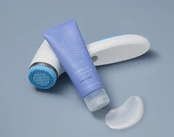

ageLOC LumiSpa iO
Un dispositivo de limpieza facial que combina el movimiento de su cabezal de silicona con un limpiador específico. Podés empezar por acá si querés conocer cómo incorporar una limpieza con dispositivo a tu rutina.
Preguntame por ageLOC LumiSpa iO